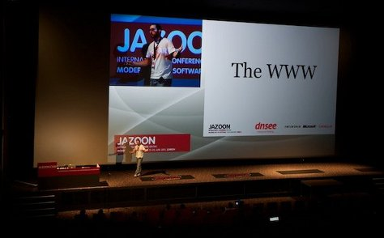

I’ve taken the stage at a few conferences in the last years: if you want to see my
presentations you’d better visit my slideshare account.
Slides
Here’s a summary of the most important ones:

- SPA, isomorphic and back to the server,
at the 2017 JsDay in Verona (ITA), where I explained how we approached building our mobile website, going back to server-side rendering, towards the end of 2016
- Dockerize it! (video),
at the 2016 Codemotion in Rome (ITA), which is a look
at linux containers and how they can make our infrastructures more efficient and easier to manage
- Deploying 3 times a day without any downtime,
at the 2015 Rocket Tech Summit, dealing with the way we’re trying to keep development
fast, reliable and fun at Namshi
- Don’t screw it up: how to build durable web APIs (video), at the 2014 italian PHPDay, where I explained tips, tricks and pitfalls of developing durable, sustainable and long-term HTTP APIs
- AngularJS is the future. Maybe., given at the 2014 edition of the ConFoo in Montreal (CA), in which I highlighted killer features, pros and cons of using AngularJS for your web apps
- A Rocket Internet experience (video), given at the ForumPHP 2013 in Paris (FRA), dealing with how we formed the development team and structured our Service-Oriented Architecture in Namshi
- Tips and tricks for your Service Oriented Architecture (video), presented at the CakeFest 2013 in San Francisco (US), in which I explained the way we approached SOA at Namshi
- HTTP colon slash slash: end of the road, presented at
the International PHP Conference 2012 in Mainz (GER), dealing with the history of the
HTTP protocol, a look at SPDY and HTTP/2.0
- Got units?, presented at
OSIDays 2011 in Bengaluru (IND), an introductive talk about implementing Dijkstra’s
algorithm in PHP with test-driven development
- Graph databases in PHP,
given at the PHPCon Poland 2011 in Kielce (PL), dealing with the theory behind graph databases and how to use OrientDB in PHP
- REST in peace: a handbook of software waste,
given at the Jazoon 2011 in Zurich (CH), a 20-minutes presentation which ranked me 2nd at the Jazoon Rookie Award, dealing with REST antipatterns and the implementation of REST in software architectures
- CMF, a pain in the F, given at the PHPDay 2011 in Verona (ITA) together with David, in which we explained a few well-know RDBMS antipatterns faced during the implementation of a CMF, introducing some NoSQL solutions that may help you
- REST in peace, given at the Codemotion 2011 in Rome (ITA), dealing with RESTful architectures and advanced gateway caching with the ESI technology
- Magento++, given at the PHPDay 2010 in Teramo (ITA), about the e-commerce PHP platform Magento
- OS business models, given at the BetterSoftware 2010 in Florence (ITA), in which I explained some business models real-world OS companies successfully adopted
- What’s new in Joomla! 1.6?,
given at the JoomlaDay 2009 in Rome (ITA), dealing with the new release of the Joomla! CMS